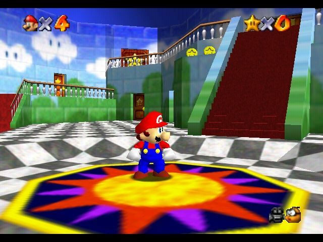
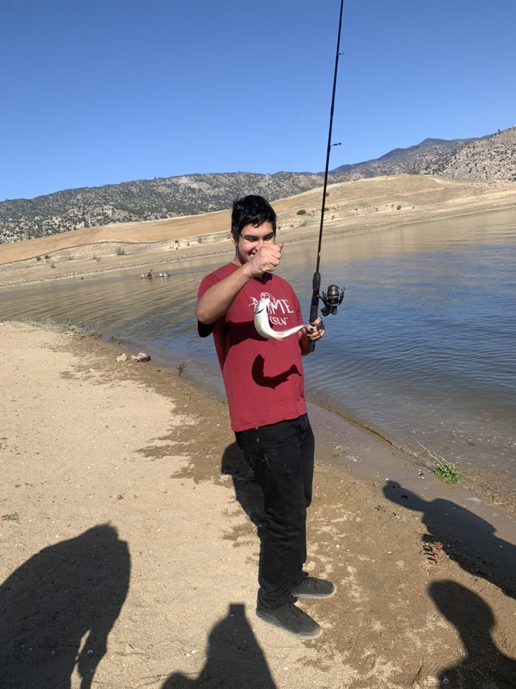
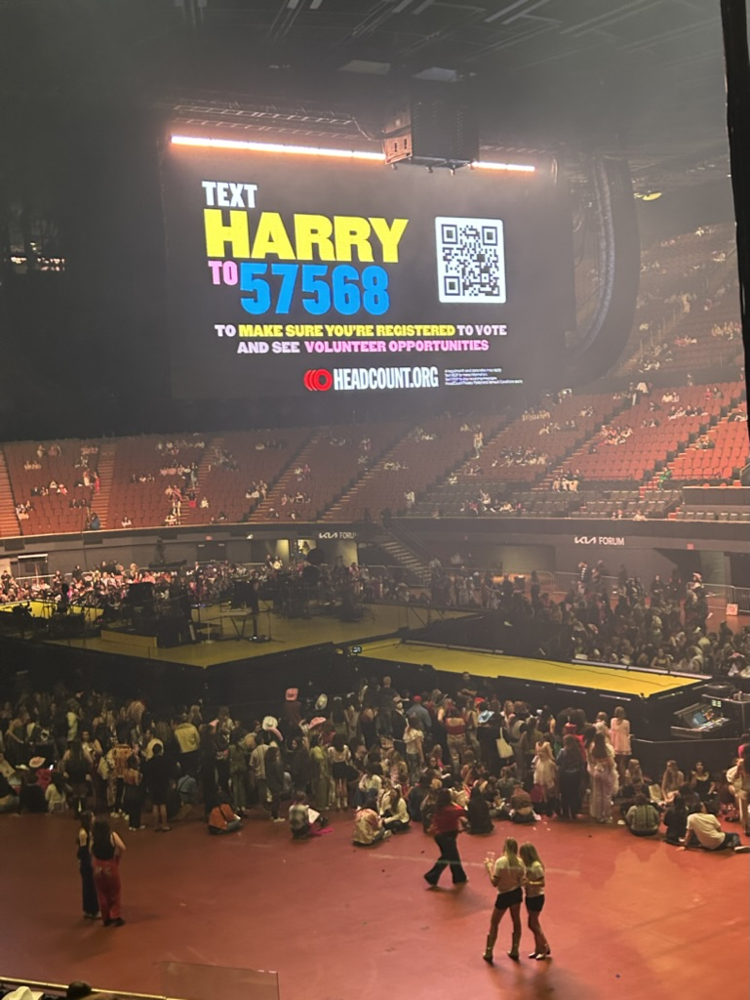
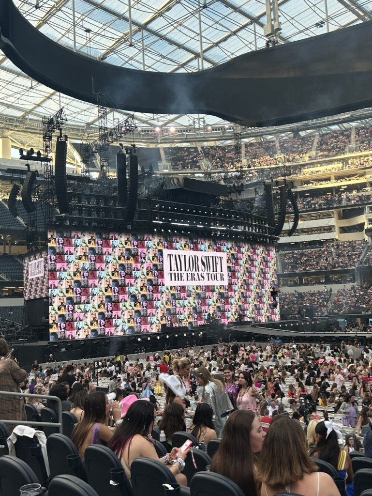
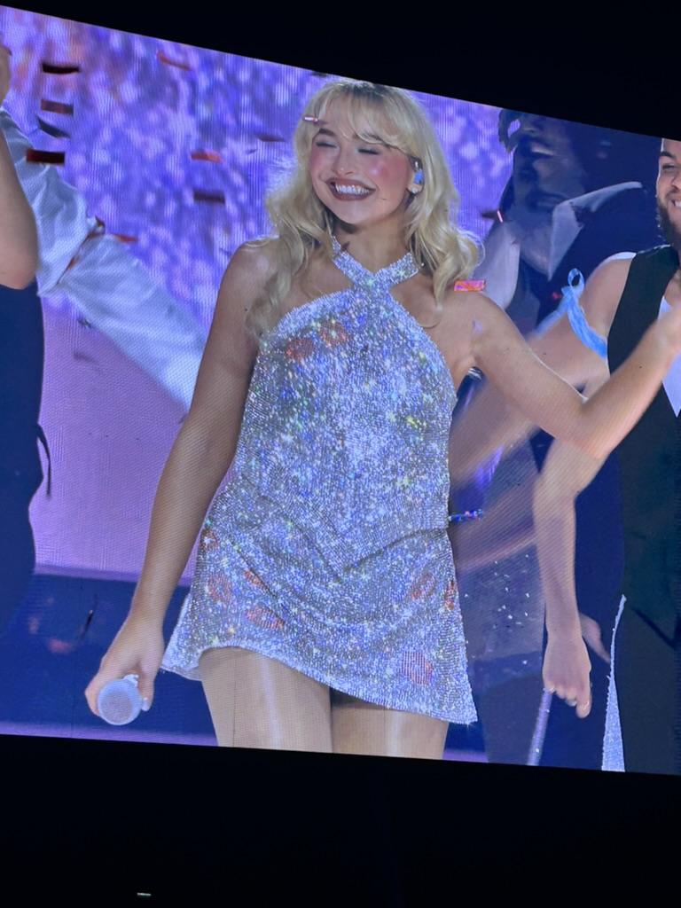
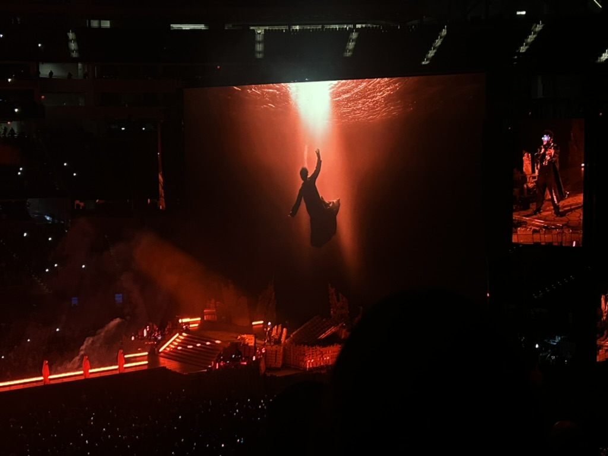

My Hobbies
I enjoy a variety of hobbies that help me relax and express my creativity. Some of my favorite activities include playing video games, photography, and spending time outdoors.
Video Games
Playing video games is one of my favorite pastimes. I enjoy exploring different genres. I mainly play action and first-person shooter games. In more recent years my friends got me into League of Legends, but I still play other games regularly. My first console was a Nintendo 64 that I got from GoodWill for my birthday, which I still have. I spent countless hours playing games like Super Mario 64, Pokemon Stadium, and GoldenEye 007. I would sometimes borrow games from my cousins as well. I remeber being pretty jealous of them having Pokemon Stadium since it was one of my favorite games to play. I remeber bringing my own controllers to their house when we gathered for Christmas parties and family events since they hosted most of these gatherings. Eventually I got more games from a different set of cousins who outgrew their consoles, which allowed me to expand my collection and continue playing classics until my brother got an Xbox 360 for his birthday. I used to love playing call of duty games, especially with my friends online. Until they became less interesting and felt repetitive. My favorite game in the series is either Call of Duty: Modern Warfare (2019) or Call of Duty: Black Ops 2. I really enjoyed the multiplayer in both and the zombies mode in BO2. I remember buying the DLC and playing them extensively with my brother. My favorite map was Mob of the Dead. I think playing these games made me want to become a game developer in the future.

Photography
Photography is another hobby I have picked up over the years. I enjoy capturing moments and being able to look back on them. I own a Canon R650 which is a 35mm film camera I bought off Facebook Marketplace for like fifty bucks. I recently bought myself a new digital camera, a Canon EOS Rebel T7, which allows me to experiment with different photography techniques and improve my skills. I am particularly interested in portrait and landscape photography. I want to practice more and bring my camera with me to more places but I'm worried about the safety and potential damage to my equipment. I would love to get into concert photography as I just got a 75mm–300mm zoom lense that would be perfect for capturing performers on stage; however, most stadiums and venues have strict policies regarding professional camera equipment, making it challenging to pursue this interest.
Outdoors
Spending time outdoors is essential for my well-being. Whether it's hiking, biking, or simply taking a walk in nature, being outside helps me relax and recharge. I appreciate the tranquility and inspiration that the natural world provides.

Music
Music is another passion of mine. I enjoy listening to a wide variety of genres, from classical to rock to electronic music. I also play the flute and have been learning for several years. Playing music allows me to express myself creatively and provides a great way to relax and unwind. I also enjoy attending live concerts and discovering new artists. I've been to so many concerts and festivals, and each experience has been unique and memorable. The most recent concert I attended was a Noah Kahn concert at the Pasadena Rose Bowl. A few artits Ive seen are:
- Noah Kahn
- Theweeknd
- Sabrina Carpenter
- Taylor Swift
- TWICE
- TXT
- Stray Kids
- Fall Out Boy
- Harry Styles
- Blackpink
I already have a few more concerts planned for the upcoming year. In October, I plan on going to a Bruno Mars concert at the Sofi Stadium and in January I plan on seeing Olivia Rodrigo at the Intuit Dome. How many concerts have you been to?



